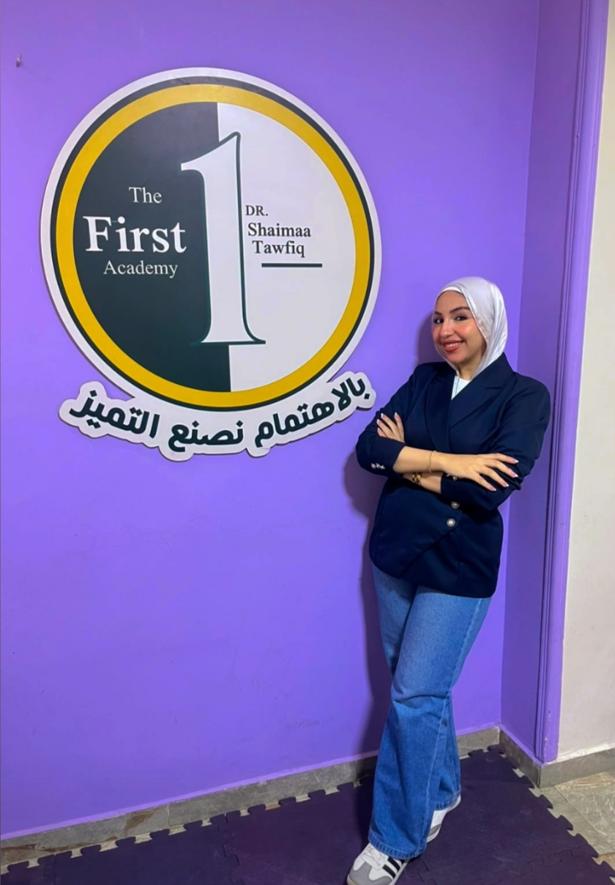

وحدة الرعاية المتخصصة
بالاهتمام والحب نصنع الفرق.. وبالعلم نبني المهارات ونصنع المستقبل.
في وحدة الرعاية المتخصصة بـ First Academy، نؤمن أن لكل طفل قدراته الخاصة، وأن كل خطوة صغيرة في رحلة تطوره تستحق الاهتمام والتقدير.
نعمل وفق منهجية بافاريا الألمانية من خلال برنامج متكامل يستهدف تنمية خمس مجالات أساسية لدى الطفل:
ومن خلال خطط مدروسة، وأنشطة هادفة، ومتابعة مستمرة، نعمل على تنمية قدرات كل طفل بما يتناسب مع احتياجاته، لنحوّل إمكاناته إلى مهارات، وخطواته الصغيرة إلى إنجازات نفتخر بها.
نحرص على توفير بيئة داعمة يشعر فيها الطفل بالأمان والحب والتشجيع، وتجد فيها أسرته الدعم والثقة، إيمانًا منا بأن التطور الحقيقي يبدأ بفهم احتياجات الطفل، ويستمر بالاهتمام والعمل والإخلاص.
First Academy | بالاهتمام نصنع التميز.
تحت إشراف

أ/ ماجي علي
⭐ مشرفة وحدة الرعاية المتخصصة وأخصائية المهارات الأولية والتدخل المبكر🎓 المؤهلات
- حاصلة على بكالوريوس الخدمة الاجتماعية
- حاصلة على دورة الأسس العلمية في التربية الخاصة
متخصصة في تنمية قدرات الأطفال باستخدام البرامج المتخصصة مثل Denver وPortage، والعمل على تطوير المهارات والمجالات النمائية بكل أشكالها، مع التركيز على تحسين الانتباه والتركيز وتقليل الاندفاعية، بما يتناسب مع احتياجات كل طفل.
وفي مجال الرعاية المتخصصة، نهتم بمتابعة تطور الأطفال، ووضع الأهداف المناسبة لكل حالة، ومتابعة تنفيذ البرامج الفردية، ودعم فريق العمل لضمان تقديم رعاية متكاملة تساعد كل طفل على تنمية قدراته وتحقيق أكبر قدر ممكن من الاستقلالية.